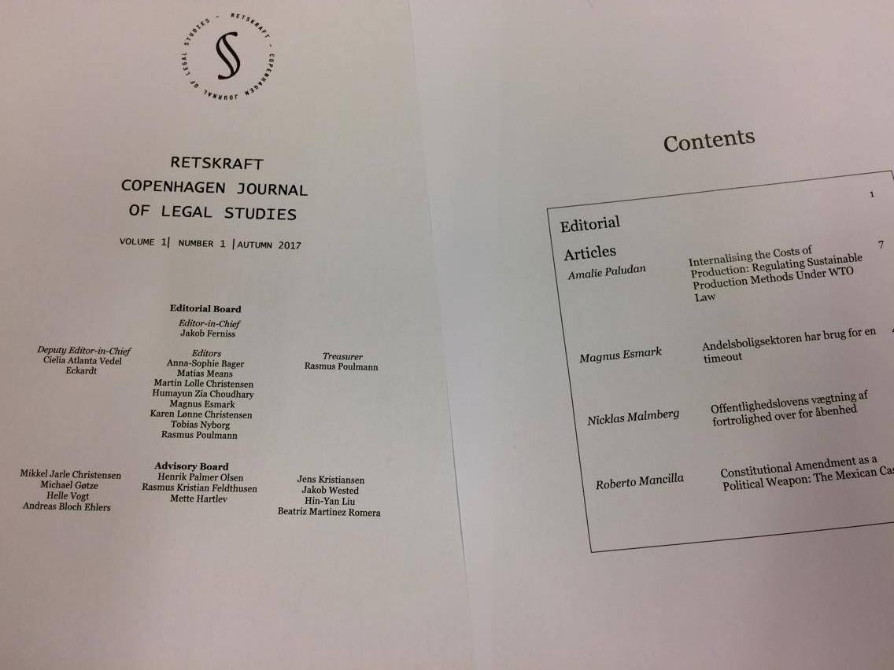

Retskraft accepterer bidrag fra studerende, forskere og praktikere inden for alle retsområder – herunder interdisciplinære bidrag. Bidrag sendes pr. e-mail til retskraft@retskraft.dk.
Tidsskriftet publicerer tre forskellige typer bidrag: artikler, kommentarer og varia. De nærmerere krav til de enkelte bidragstyper fremgår af tidsskriftets forfattervejledning (PDF). Alle bidrag undergives i udgangspunktet fagfællebedømmelse.
Retskraft accepts contributions from students, researchers and practitioners within all areas of law – including interdisciplinary contributions. Contributions are submitted via email to retskraft@retskraft.dk.
The journal publishes three types of conributions: articles, comments and varia. The requirements for each type of contributions are found in the journal's author guidelines (PDF). All contributions are generally subjected to peer review.
